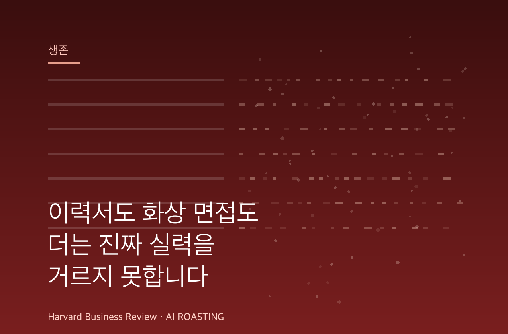

생성형 AI가 채용의 두 신호를 양쪽에서 동시에 무너뜨렸습니다. 위에서는 이력서가, 아래에서는 화상 면접이 뚫립니다. 누구나 매끄러운 이력서와 면접 답변을 거의 공짜로 만듭니다.
저자들은 1년에 걸쳐 인사 리더 120명을 인터뷰하고 1차 면접 6,380건을 분석했습니다. 신입 SW 엔지니어 면접의 약 60%에서 실시간 AI 도움이 의심되는 패턴이 나왔습니다.
대응책은 더 강한 감시가 아니라 판단력 측정입니다. 즉석에서 추론하게 만드는 면접에서 평범한 이력서의 지원자 4명 중 1명이 기대를 뛰어넘었습니다. 이제 가장 희소한 신호는 판단력입니다.
당신이 채용한 그 '완벽한 지원자'는 일을 잘하는 사람입니까, 채용 과정을 잘 통과하는 사람입니까?
AI는 그 둘을 구분할 수 없게 만들었습니다.
지난 수십 년간 기업은 흠 없는 이력서를 내고 면접 질문에 정돈된 답을 하는 지원자를 선호했습니다. 생성형 AI는 실력이 있든 없든 그 둘을 손쉽게 만들어 줍니다. 면접을 잘 보는 능력이 사실상 무한하고 공짜가 됐습니다.
이력서의 홍수는 이미 채용 담당자에게 익숙한 골칫거리입니다. 더 위험한 변화는 그 아래에서 일어납니다. 진짜를 가르는 마지막 관문으로 여겨지던 대화형 면접이 실시간으로 뚫리고 있습니다.
이것은 인사팀의 업무 부담이 아니라 경영의 전략 리스크입니다. 초기 관문이 작동을 멈추면, 조직은 일을 잘하는 사람이 아니라 채용 과정을 잘 통과하는 사람을 뽑게 됩니다. 인재 밀도가 조용히 낮아집니다.
이 글은 학자가 아니라 채용 스크리닝 스타트업을 준비하는 기술자 두 명의 현장 연구입니다. 2025년 7월부터 5개월간 인사 리더 120명, 기업 87곳을 인터뷰했습니다. 동시에 1차 화상 면접 6,380건을 분석했습니다. 가트너는 2028년이면 지원자 프로필 4건 중 1건이 일부 또는 전부 가짜일 것으로 봅니다. 구글과 맥킨지가 일부 직무에서 대면 면접을 되살린 이유가 여기 있습니다. 효율을 포기하면서까지 손볼 만큼 심각한 문제라는 신호입니다.
먼저 데이터의 성격을 짚습니다. 이 연구는 채용 스크리닝 도구를 만드는 창업자들이 직접 수행했습니다. 이해관계가 걸린 출처입니다. 다만 인터뷰 규모와 6,380건의 면접 분석은 방향을 읽기에 충분합니다. 절대 수치보다 흐름으로 받아들이는 편이 안전합니다.
첫째, 채용 깔때기가 양쪽에서 동시에 무너집니다. 위에서는 이력서와 자기소개서가 신호 가치를 잃었습니다. AI가 최적화를 너무 쉽게 만들었기 때문입니다. 아래에서는 화상 면접이 실시간 보조 도구에 뚫립니다. 가장 단단하다고 믿던 두 관문이 함께 흔들립니다.
둘째, 이력서는 더 이상 1차 신호가 아닙니다. 지원자는 키워드로 채운 맞춤형 이력서를 몇 분 만에 만듭니다. 흰색 글씨로 키워드를 숨겨 매칭 점수를 올리기도 합니다. 문제는 채용 측 AI도 똑같이 오염됐다는 점입니다. 메릴랜드대, 오하이오주립대, 싱가포르국립대 공동 연구는 AI 스크리너가 자기선호 편향을 보인다고 밝혔습니다. 자기 출력과 닮은 문체의 이력서를 23~60% 더 통과시켰습니다. 이력서가 실력이 아니라 "어떤 AI로 썼는가"를 반영하기 시작했습니다.
셋째, 화상 1차 면접도 뚫립니다. Final Round AI, Parakeet, Cluely 같은 도구가 등장했습니다. 면접 중 화면에 실시간 답변을 띄워 줍니다. Cluely는 2025년 시드 단계에서 530만 달러를 투자받았습니다. 창업자는 같은 도구의 초기 버전을 만들어 컬럼비아대에서 정학당한 인물입니다. 일부 지원자 사이에서 이런 도구는 부정행위가 아니라 생존 전술로 통합니다. 1차 면접의 지원자와 대면 단계의 지원자가 다른 사람이었다는 대리 면접 정황도 보고됐습니다.
넷째, 의심 패턴은 직무에 따라 크게 갈립니다. 저자들은 6,380건을 응답 지연, 어휘·유창성의 급변, 능동 회상과 어긋나는 시선 패턴으로 채점했습니다. 두 가지 이상 걸리면 의심으로 분류하고 사람이 다시 검토했습니다. 결과는 직무별로 뚜렷이 달랐습니다.
| 직무 유형 | 의심 패턴 비율 | 해석 |
|---|---|---|
| 영업직 (어카운트 이그제큐티브) | 10% 미만 | 답이 정해지지 않아 실시간 보조가 어렵습니다 |
| 중급 기술직 | 약 40% | 구조화된 문제라 AI가 답을 대기 쉽습니다 |
| 신입 SW 엔지니어 | 약 60% | 정답형 문제 + 도구·전술이 빠르게 퍼지는 커뮤니티 |
의심 패턴은 부정행위의 확증이 아니라 추가 검토가 필요한 지표입니다. 다만 신입 기술직 면접 절반 이상이 의심 대상이 되면, 1차 면접 단계 자체가 신뢰를 잃습니다. 출처: Sunil & Saraf (2026), HBR, 8개 미국 기술기업 1차 면접 6,380건 분석.
다섯째, 좋은 지원자가 오히려 평범해 보입니다. 약한 신호는 엉뚱한 사람을 통과시킬 뿐 아니라 진짜를 숨깁니다. 적응형 추론 면접에서는 평범한 이력서의 지원자가 더 화려한 경력자를 앞서는 일이 잦았습니다. 사례 속 제품 디자이너 조애나는 지방 주립대 출신에 무명 스타트업 경력뿐이었습니다. 100곳 넘게 지원해 매번 걸러졌습니다. 그러나 즉석에서 사용자 흐름을 비판하라고 하자 달랐습니다. 정답을 넘어 사업 전제에 의문을 던지고 3단계 트레이드오프를 제안했습니다. 채용 6개월 뒤 팀 상위 성과자가 됐습니다. 이런 역전이 전체 지원자의 약 4분의 1에서 나타났습니다.
여섯째, 해법은 감시가 아니라 판단력 측정입니다. 행동 면접과 적응형 추론 면접은 AI에 대한 노출도가 다릅니다. 정해진 각본을 묻는 면접은 AI가 실시간으로 답을 짜기 쉽습니다. 답변에 따라 즉석에서 파고드는 면접은 대화가 계속 바뀌어 실시간 보조가 따라오지 못합니다. 조직심리학의 2023년 재검증 연구도 구조화 면접이 여전히 실제 성과를 가장 잘 예측한다고 확인했습니다.
| 구분 | 행동 면접 | 적응형 추론 면접 |
|---|---|---|
| 질문 방식 | 정해진 각본 ("갈등을 겪은 경험") | 답변에 따라 즉석에서 추가 질문 |
| AI 실시간 대응 | 쉬움 (회사마다 질문이 비슷) | 어려움 (대화가 계속 이동) |
| 거르는 신호 | 준비된 매끄러움 | 즉석에서 발휘하는 판단력 |
행동 면접의 "~한 경험을 말해 보라"는 질문은 회사가 바뀌어도 거의 같습니다. 그래서 실시간 AI가 답을 미리 준비합니다. 적응형 면접은 방금 한 말을 받아 트레이드오프를 방어하게 만듭니다. 대본과 실제 추론의 격차가 드러납니다. 출처: Sunil & Saraf (2026), HBR.
일부 기업은 방향을 바꾸기 시작했습니다. 메타는 지원자가 AI 보조를 쓰도록 허용하는 "AI 지원 면접"을 시험합니다. 실제 개발 환경에 가깝고, 오히려 숨은 부정행위의 효과를 떨어뜨린다는 논리입니다. AI가 실제 업무의 일부라면, 면접은 AI 없이 일하는 능력뿐 아니라 AI를 잘 쓰는 능력까지 봐야 합니다. 문제를 명확히 틀 짓고, 출력을 비판적으로 평가하고, 판단을 더하는 능력입니다.
잘못된 채용은 비쌉니다. 미국 인사관리협회(SHRM)의 2025년 벤치마킹 보고서를 봅니다. 비임원 직무의 평균 채용 비용이 5,475달러, 임원 직무가 약 36,000달러입니다. 갤럽은 한 명을 교체하는 데 연봉의 1.5~2배가 든다고 보수적으로 추정합니다. 연 200명을 뽑는 회사라면, 스크리닝 오류가 조금만 늘어도 직접 채용 비용이 크게 불어납니다. 이직, 적응 기간, 생산성 손실은 아직 더하지도 않은 수치입니다.
더 큰 비용은 눈에 잘 안 보입니다. 상당수 지원자가 실력이 아닌 다른 것으로 평가되면, 리더는 최근 채용이 얼마나 맞았는지조차 알 수 없습니다. 이 불확실성이 역량 구축을 곧장 위협합니다. 한 번의 오판은 5,475달러로 끝나지만, 신호 전체에 대한 불신은 모든 채용의 신뢰도를 함께 깎습니다. 비용은 한 명이 아니라 인재 밀도 단위로 쌓입니다.
"갈등을 겪은 경험을 말해 보라" 같은 질문을 줄입니다. 대신 지원자가 방금 한 답을 받아 "그 선택의 반대 근거는 무엇입니까"처럼 즉석에서 파고듭니다. 도중에 제약을 하나 바꾸거나, 직관에 반하는 트레이드오프를 방어하게 합니다. 실시간 AI가 따라오지 못하는 지점을 만듭니다. (소요 시간: 면접 질문지 재설계 반나절)
진위 확인이 끝나면, 지원자가 일터에서 쓸 AI 도구를 그대로 쓰게 허용합니다. AI가 만든 결함 있는 사업 계획이나 코드, 시장 분석을 주고 평가하게 합니다. 환각을 잡아내고, 전략적 맹점을 찾고, 논리를 교정하는지 봅니다. AI가 흉내 내기 어려운 판단력을 직접 측정합니다. (소요 시간: 과제 1건 설계 2~3시간)
모든 채용에서 원격 면접을 없앨 필요는 없습니다. 다만 영향력이 큰 직무는 대면 최종 라운드를 정책으로 둡니다. 비행기로 후보를 부르는 비용의 의미가 바뀌었습니다. 이제는 문화 적합성 확인이 아니라, 1차 면접의 진위를 검증하는 더 높은 신뢰의 관문입니다. (소요 시간: 채용 정책 한 줄 개정)
이 데이터는 이해관계가 걸린 출처입니다. 저자들은 채용 스크리닝 스타트업을 준비하며 이 연구를 했습니다. "면접이 뚫린다"는 결론은 그들이 풀려는 문제 그 자체입니다. 의심 패턴 비율도 부정행위의 확증이 아니라 추가 검토가 필요한 지표입니다. 방향성 신호로 읽되, 60%라는 숫자를 그대로 인용하지 마십시오.
의심을 감시로 풀면 역효과가 납니다. 응답 지연이나 시선을 근거로 지원자를 자동 탈락시키면 오판과 차별 위험이 큽니다. 본문도 이를 감시가 아닌 자본 배분의 문제로 봅니다. 비싼 임원 시간을 AI 대리인 평가에 쓰지 않으려는 것입니다. 해법은 더 강한 적발이 아니라 더 나은 질문 설계입니다.
공개 지원 통로를 닫으면 다양성이 무너집니다. 인맥 발굴로 후퇴하면 잡음은 줄지만, 간판 없는 인재가 보일 길이 사라집니다. 조애나 같은 지원자는 100곳에서 걸러졌다가 적응형 면접에서야 드러났습니다. 신호를 고친다는 명목으로 통로 자체를 닫지 않도록 주의해야 합니다.
실력을 흉내 내기 쉬워질수록, 판단력이 가장 희소한 채용 신호가 됩니다. 매끄러운 답이 아니라 즉석에서 추론하는 힘을 측정하는 조직이 더 강한 팀을 만듭니다.
적응형 추론 면접(adaptive reasoning interview): 지원자가 방금 한 답을 받아 즉석에서 더 파고드는 면접입니다. 대화가 계속 바뀌어 실시간 AI 보조가 따라오기 어렵습니다.
구조화 면접(structured interview): 직무와 관련된 질문, 일관된 채점 기준, 추론 근거 확인을 갖춘 면접입니다. 조직심리학 연구에서 실제 성과를 가장 잘 예측하는 방식으로 꼽힙니다.
자기선호 편향(self-preference bias): AI 평가 모델이 자기 출력과 닮은 글을 더 높게 치는 경향입니다. 같은 AI로 쓴 이력서가 실력과 무관하게 더 잘 통과하는 결과로 이어집니다.
대리 면접(proxy interview): 면접에 응한 사람과 실제 채용될 사람이 다른 부정 형태입니다. 1차 화상 단계와 대면 단계의 인물이 달라지는 정황으로 드러납니다.
인재 밀도(talent density): 조직 안에서 실제로 일을 잘하는 사람이 차지하는 비중입니다. 초기 채용 관문이 약해지면 잘못된 채용이 쌓여 이 밀도가 낮아집니다.
- Sunil, S., & Saraf, M. (2026, June). AI has broken hiring. Here's how to fix it [Article]. Harvard Business Review. (원문 보기 ↗)
- Society for Human Resource Management. (2025). Talent Acquisition Benchmarking Report. SHRM.
- Gartner. (2025). Gartner predicts one in four candidate profiles will be fake by 2028 [Report]. Gartner, Inc.
- University of Maryland, Ohio State University, & National University of Singapore. (2025). Self-preference bias in AI résumé screening [Study]. (저자명 미공개)
- Sackett, P. R., et al. (2023). Reassessment of selection-tool validities. Industrial and Organizational Psychology.